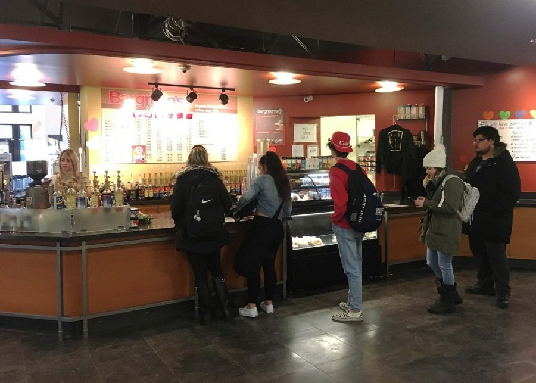

June 4, 2026
The outcome of an action is guaranteed.

A sequential decision problem for a fully observable, stochastic environment with a Markovian transition model and additive rewards is called a Markov Decision Process.
Deterministic vs. Stochastic
| \( U^\pi(s) = \) |
\( \mathbb{E}\!\left[\, \textstyle\sum_{t=0}^{\infty} \gamma^t\, R(s_t) \,\mid\,\pi,\, s_0 = s \,\right] \)
\( \mathbb{E}\!\left[\, R(s_0) + \gamma \textstyle\sum_{t=0}^{\infty} \gamma^t\, R(s_{t+1}) \,\mid\,\pi,\, s_0 = s \,\right] \)
|
| \( U^\pi(s) = \) | \( R(s) \) | \( + \gamma \) | \( \mathbb{E}\!\left[ U^\pi(s') \mid s,\, \pi(s) \right] \) |
|
Expected Utility |
Immediate Reward |
Discounted |
Expected utility of the next state |
| \( U^{\pi^*}(s) = \) | \( R(s) \) | \( + \) | \( \max\limits_{a} \left[ \gamma \, \mathbb{E}_{s'} \left[ U^{\pi^*}(s') \right] \right] \) |
|
Optimal Utility |
Immediate Reward |
plus |
Maximum over actions (a) |
| \( S \) | |
| \( A(s) \) | Invest or Save |
| \( P(s' \mid s) \) | Sea level rise. |
| \( R(s) \) | Remaining budget or large penalty if city floods |
Source: embeddedethics.stanford.edu
Assumptions and modeling decisions:
MDPs find optimal policy for the model we choose.
Source: embeddedethics.stanford.edu
By the end of this lecture you will be able to…